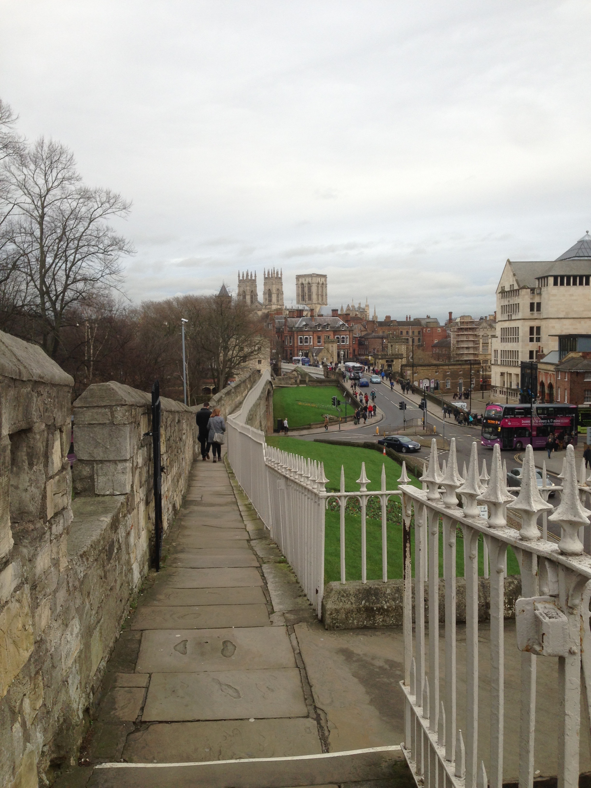
Walking along the wall that surrounds the city of York.
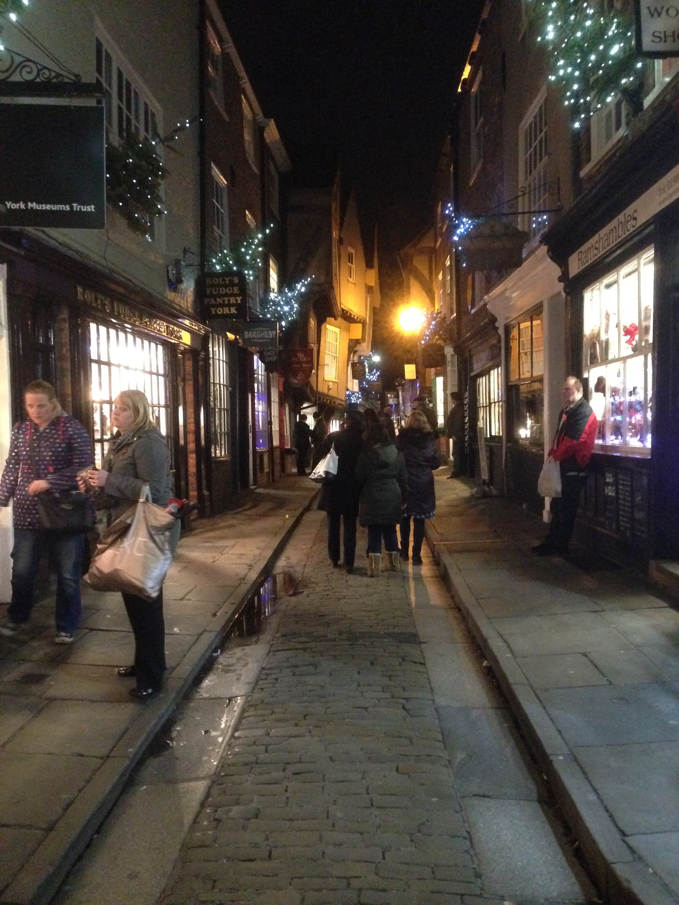
Strolling down York's famous street.
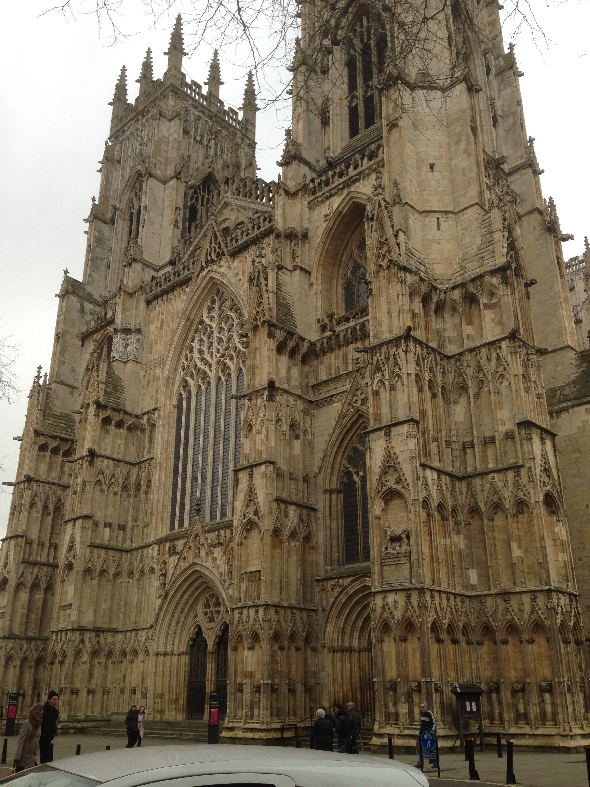
Exterior view of York Minister Cathedral.
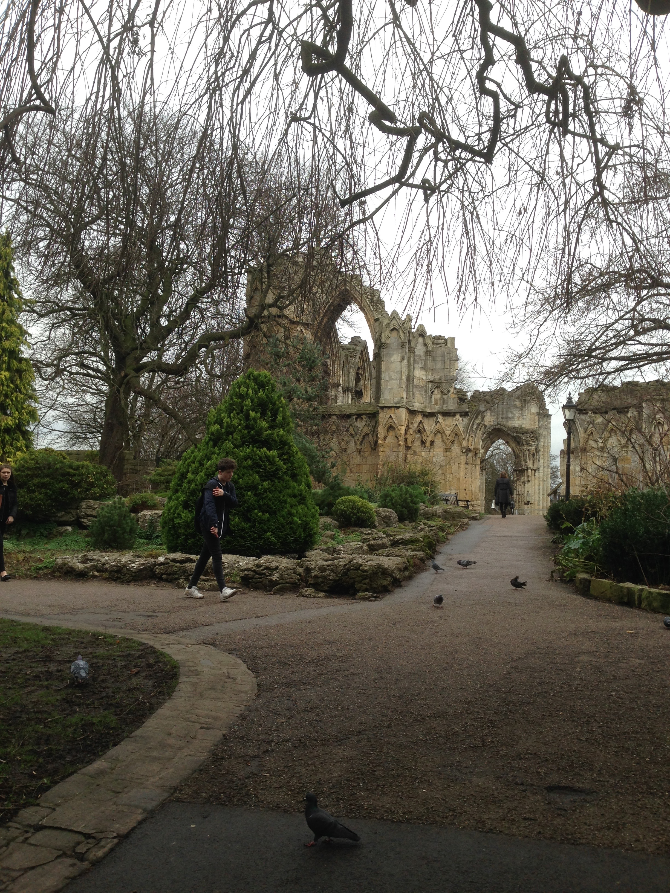
The ruins of St. Mary's Abbey in York.
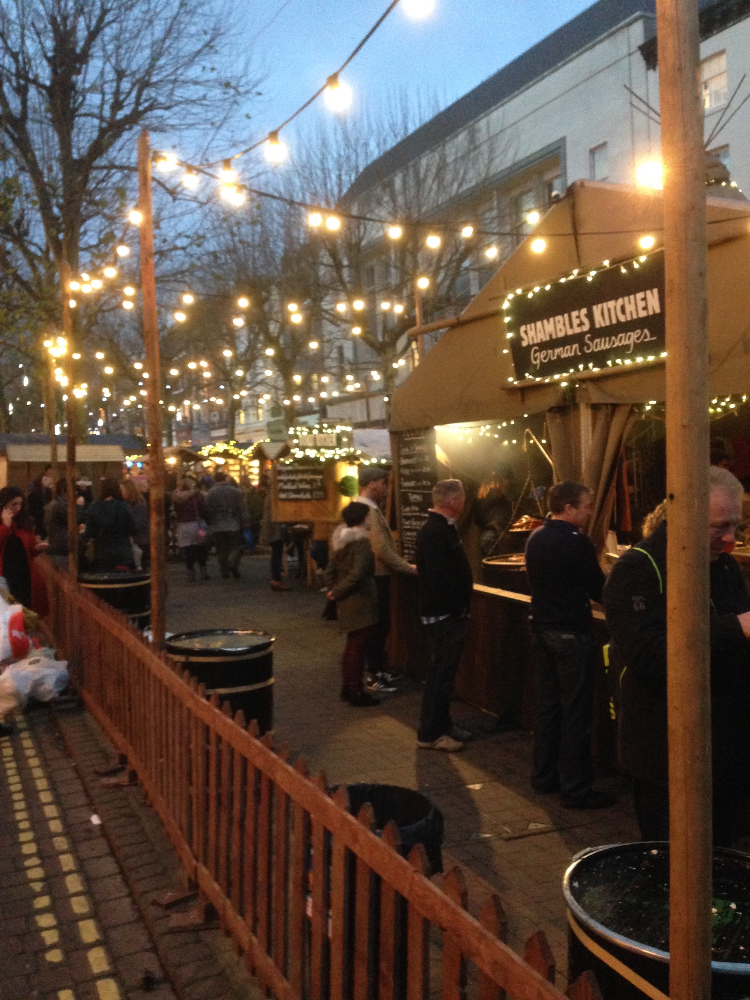
York Christmas Market booth.
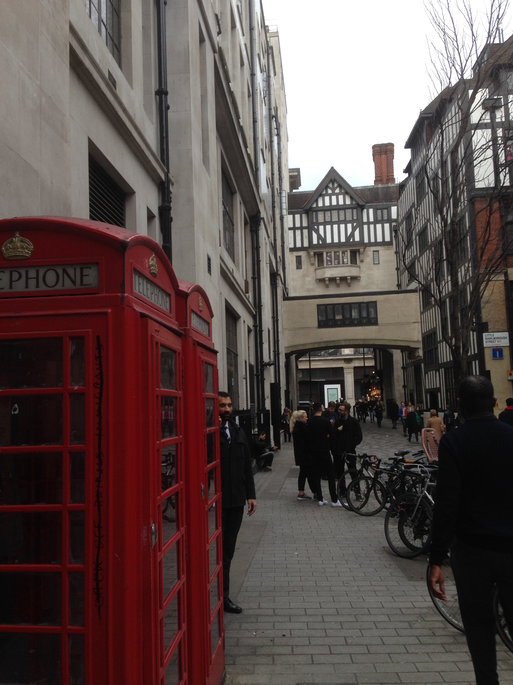
Iconic British red phone booth.
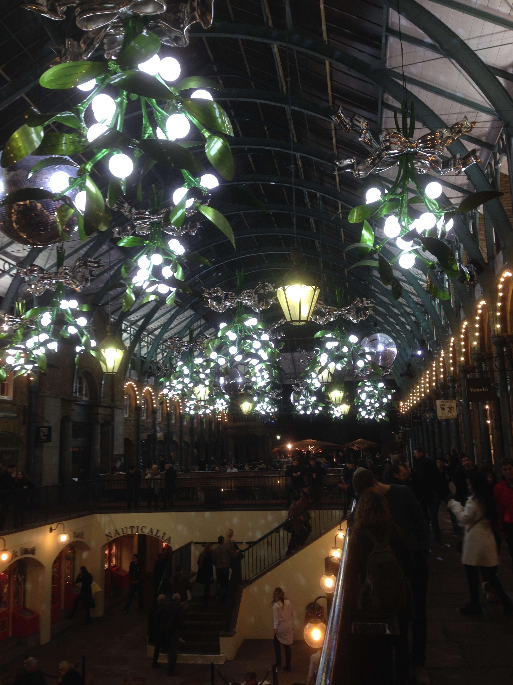
Walking through Covent Gardens at night.
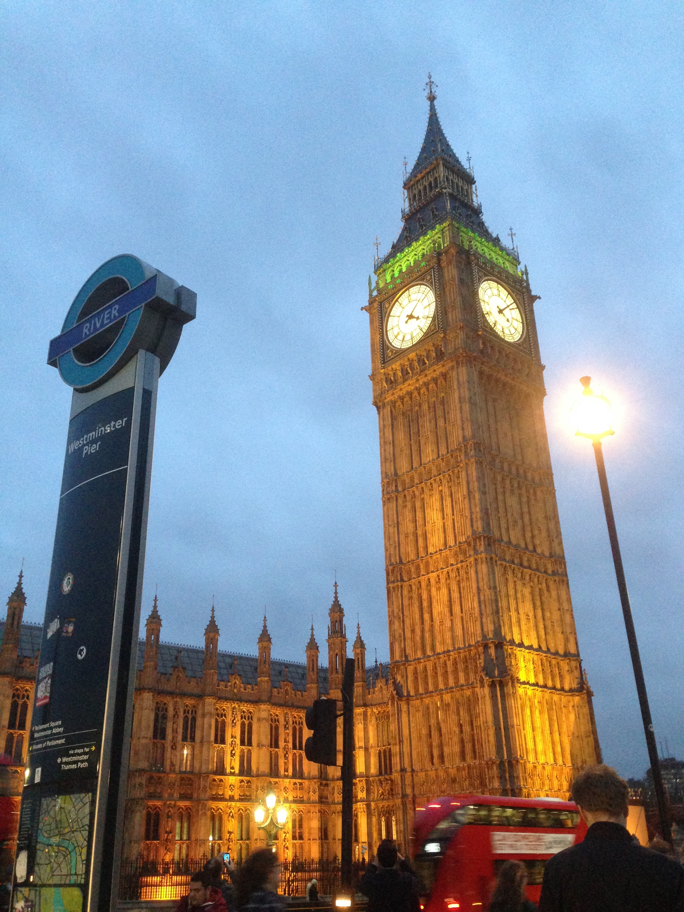
View of Big Ben from the West Minister tube station.
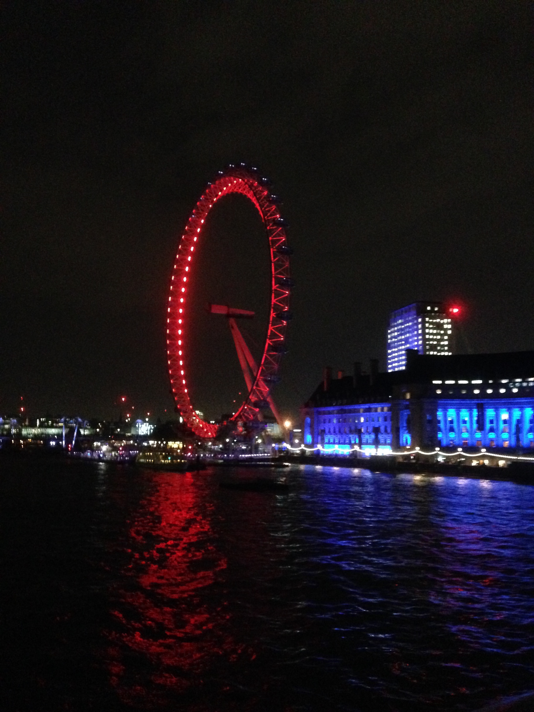
The London Eye lit up at night.
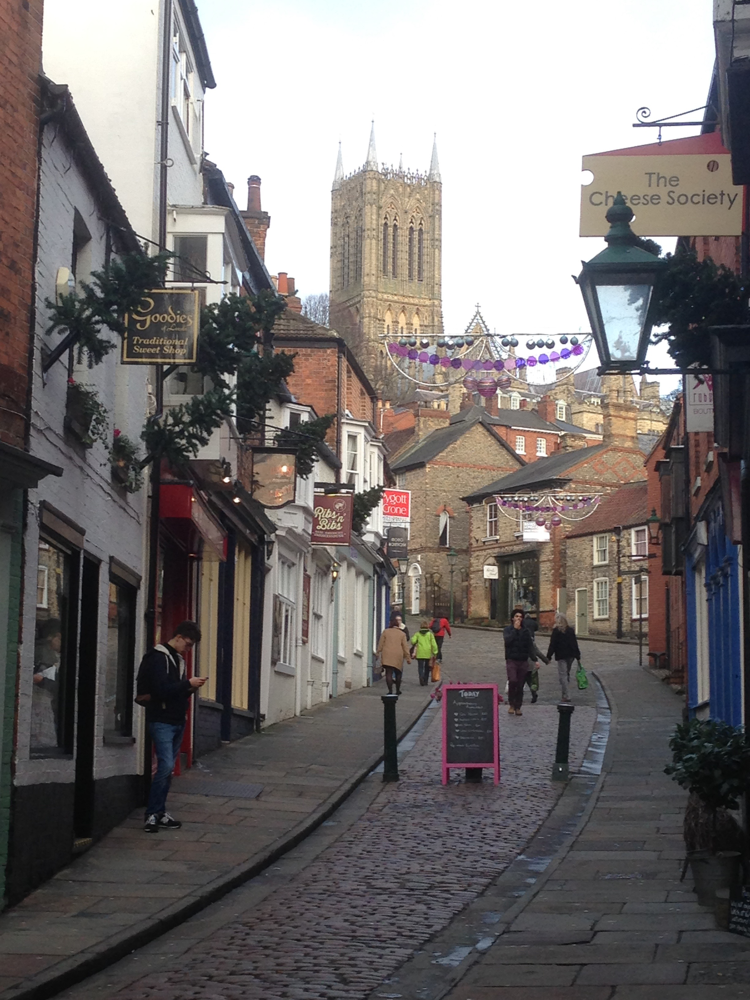
A Lincoln street with the cathedral in the background.
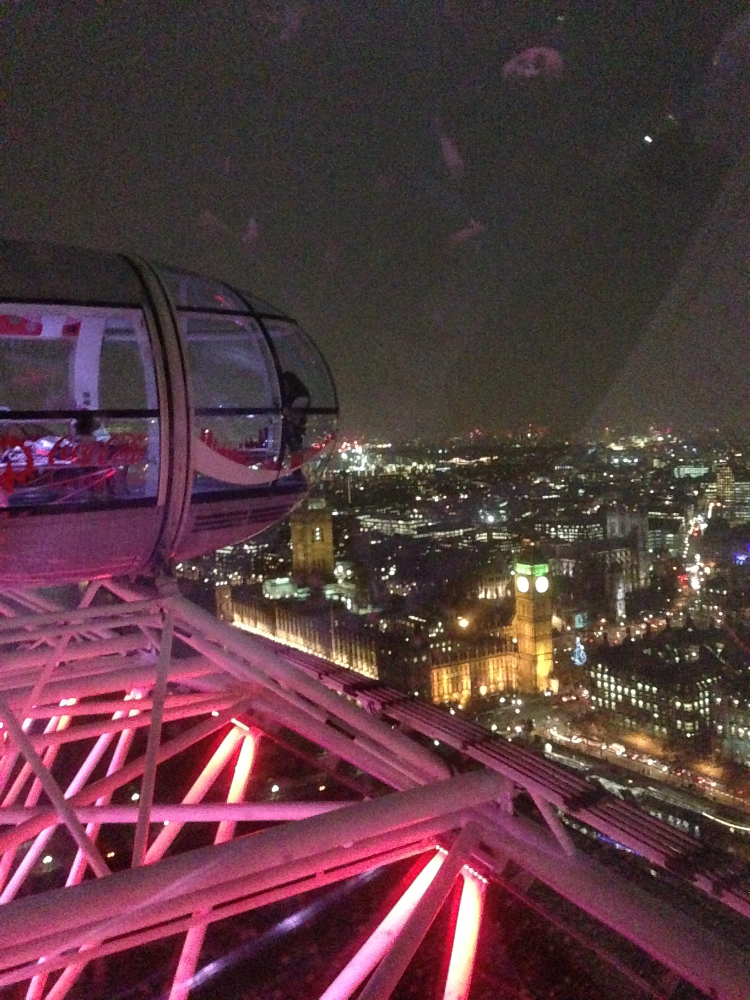
Aerial view of Big Ben and London from The Eye.
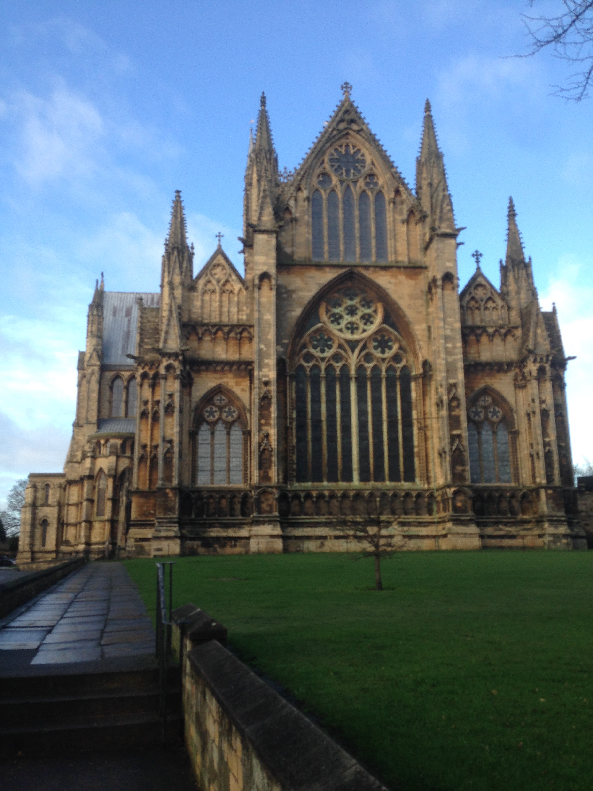
Exterior view of Lincoln Cathedral.
×